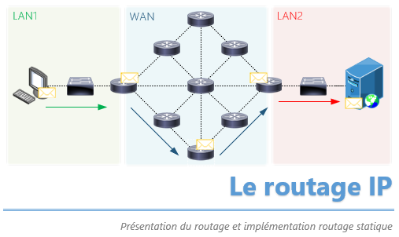
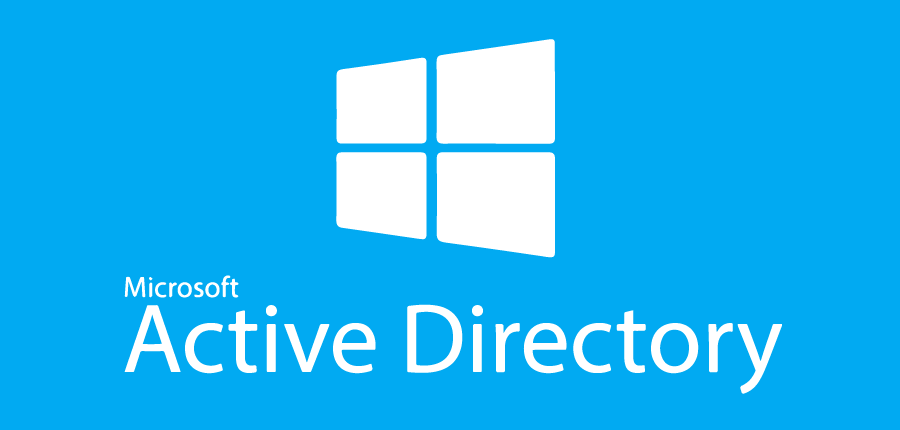
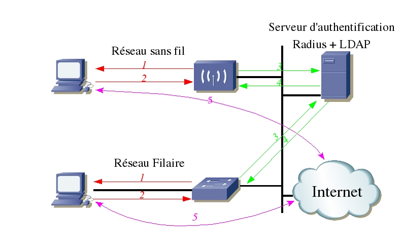

Mise en place de VLANs sur des switchs Cisco Catalyst. Configuration des ports en mode access et trunk, routage inter-VLAN via un routeur ou un switch de niveau 3.

Implémentation et comparaison des protocoles RIPv2 et OSPF sur des topologies multi-routeurs. Analyse de la convergence, des tables de routage et du comportement en cas de panne de lien.

Configuration d'un réseau IPv6 : adressage statique et automatique (SLAAC, DHCPv6). Compréhension des types d'adresses (link-local, global unicast, multicast) et migration IPv4/IPv6.
Mise en œuvre d'un tunnel VPN IPsec entre deux sites distants. Configuration des phases IKE (phase 1 et 2), des ACL crypto et vérification du chiffrement du trafic inter-site.
Déploiement d'un pare-feu pfSense. Configuration des règles de filtrage par interface, implémentation d'ACL pour contrôler les flux, mise en place du NAT et analyse des logs de sécurité.
Capture et analyse de trames réseau avec Wireshark. Identification des protocoles (ARP, DNS, DHCP, HTTP, TCP), détection d'anomalies, filtres d'affichage et reconstruction de flux.

Installation et configuration d'un domaine Active Directory sur Windows Server. Création d'OUs, d'utilisateurs et de groupes, déploiement de GPO pour la gestion des postes clients.

Déploiement et configuration des services DHCP, DNS et WINS sur Windows Server 2019. Gestion des zones DNS primaires/secondaires, des étendues DHCP et résolution de noms.

Administration d'un serveur Debian : gestion des utilisateurs, droits UNIX (chmod, chown), configuration SSH, serveur web Apache, gestion des paquets APT et scripts Bash de base.

Développement d'un script PowerShell de nettoyage post-session pour des PC de formation sous Windows 11. Gestion de l'élévation UAC, redirection des dossiers shell OneDrive, et fenêtre personnalisée de fin d'exécution.
Création et gestion de machines virtuelles sous VirtualBox et VMware Workstation. Configuration des réseaux NAT, bridge et host-only. Snapshots, clonage et import/export de VMs.

Mise en œuvre d'une politique de sauvegarde (3-2-1). Utilisation d'outils de backup, tests de restauration, notion de RTO/RPO et élaboration d'un plan de continuité d'activité simplifié.
Étude et mise en œuvre du chiffrement symétrique et asymétrique. Création d'une infrastructure PKI simple, génération de certificats SSL/TLS, compréhension des CA et CRL.
Déploiement d'un serveur RADIUS (FreeRADIUS) pour l'authentification réseau 802.1X. Configuration du switch et du supplicant, tests d'authentification par certificat et mot de passe.
